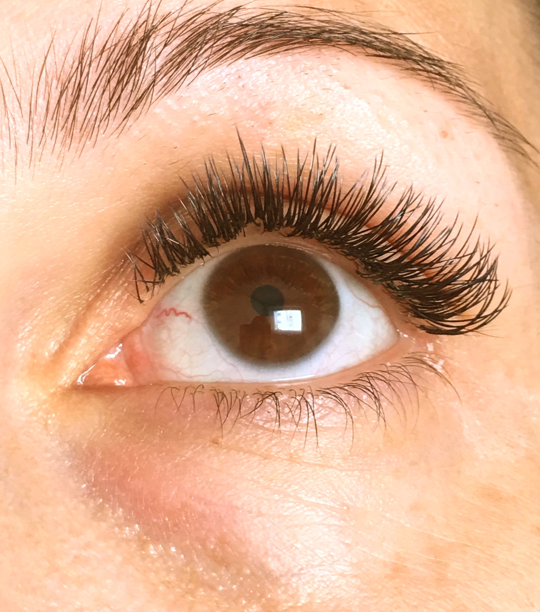
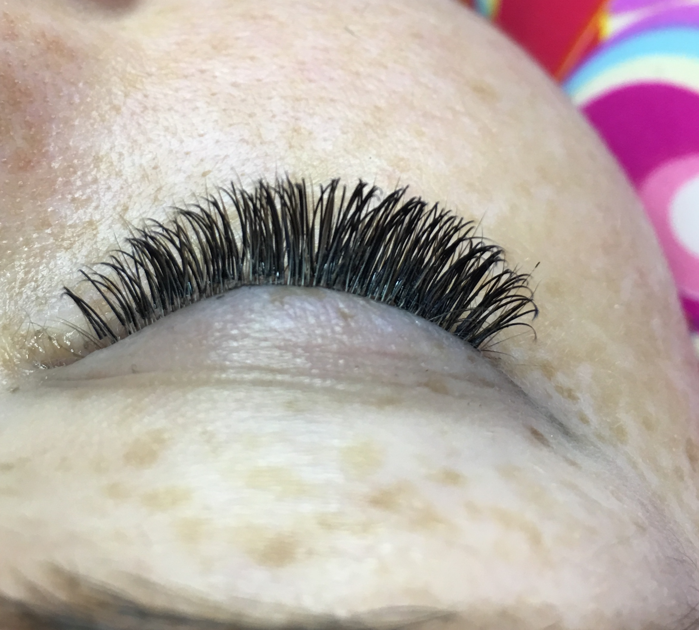
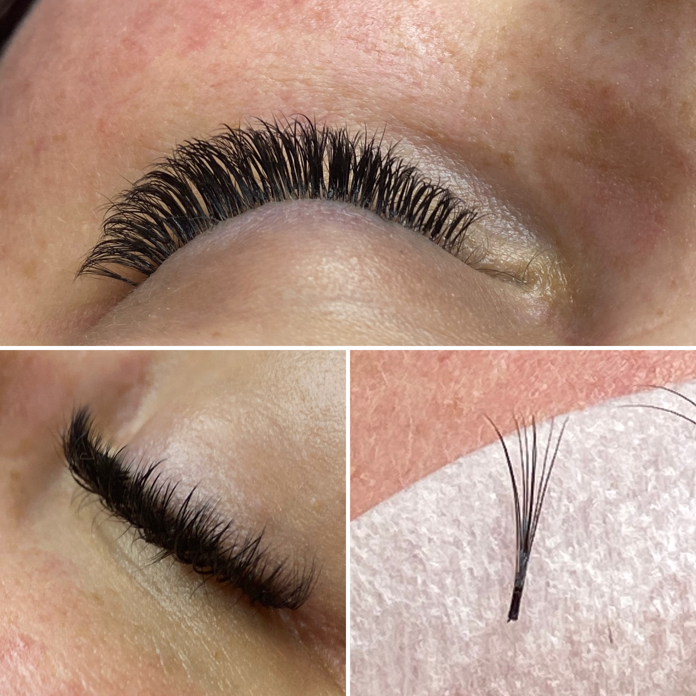

Natural Look, Soft Volume oder Lash Lifting — jedes Set wird individuell auf deinen Augentyp abgestimmt. Professionell, langanhaltend, ausdrucksstark.
Jeder Look ist einzigartig — ich passe Länge, Krümmung und Volumen individuell an.
Eine Extension pro Naturwimper — für einen natürlich-definierten Look. Ideal für den Alltag und alle, die es dezent mögen.
Mehrere feine Extensions pro Naturwimper — für mehr Fülle und Ausdruck. Dramatischer als Classic, aber immer noch elegant.
Deine eigenen Wimpern, perfekt in Form gebracht. Ohne Extensions — mit natürlichem Schwung, der 6–8 Wochen hält.
| Neuanlage60–70 Minuten | 122 € |
| Nachfüllen bis 3 Wochen | 75 € |
| Nachfüllen bis 4 Wochen | 80 € |
| Neuanlage60–70 Minuten | 155 € |
| Nachfüllen bis 3 Wochen | 85 € |
| Nachfüllen bis 4 Wochen | 95 € |
| Ohne Farbe | 39 € |
| Mit Farbe | 49 € |
| Farbige Akzente | 10 € |
| Swarovski-Highlights | ab 2 € / Stein |



3–4 Wochen, abhängig von deinem Haarwuchsrhythmus und der Pflege. Mit regelmäßigen Nachfüll-Terminen bleiben deine Wimpern dauerhaft vollständig.
Bitte komm ohne Mascara und ohne Augen-Make-up. Kein Wimpernzange oder Wimpernzange verwenden. Saubere, entfettete Wimpern sind die beste Voraussetzung für ein gutes Ergebnis.
Bitte 24 Stunden kein Wasser und keine Feuchte an die Wimpern. Danach normal duschen — nur Öl-freie Reinigungsprodukte verwenden, um die Klebung nicht zu lösen.
Natural Look (1:1) bedeutet: eine Extension pro Naturwimper — dezent und natürlich. Soft Volume bedeutet: mehrere feine Wimpern pro Naturhaar — mehr Fülle und Dramaturgie, ohne schwer zu wirken.
Schreib mir über WhatsApp — ich antworte persönlich und schnell.